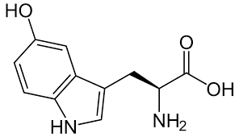
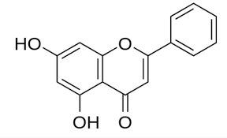

Estudo Científico Revela Potencial Benefício do Chocolate na Melhoria do Sono

Um estudo recente na área da nutrição e sono, conduzido por especialistas no campo, levantou a possibilidade de que o consumo regular de chocolate amargo, rico em flavonoides, poderia ter um impacto positivo na qualidade do sono. Os flavonoides do chocolate foram associados a uma substância chamada Serotonina, que se acredita possuir propriedades relaxantes e reguladoras do sono. Os pesquisadores observaram uma melhoria notável na qualidade do sono em participantes, principalmente nos pacientes com insônia que incluíram o chocolate amargo em sua dieta. Embora os resultados preliminares tenham mostrado uma tendência promissora, é importante destacar que este estudo não é conclusivo, e mais pesquisas são necessárias para confirmar essas descobertas. A comunidade científica aguarda com expectativa novos estudos para avaliar o verdadeiro potencial do chocolate como auxiliar no sono.
O que é a Serotonina?
A Serotonina, também conhecida como 5-hidroxitriptamina (5-HT), é um neurotransmissor que desempenha um papel fundamental na regulação do humor, sono, apetite e muitas outras funções no corpo. Essa substância é produzida nas células do sistema nervoso e é responsável por transmitir mensagens entre os neurônios. Estudos científicos mostraram que a serotonina desempenha um papel vital na promoção do bem-estar emocional e é frequentemente associada a sentimentos de felicidade e relaxamento. A falta de serotonina tem sido correlacionada com transtornos como depressão e ansiedade.
O que são os flavonoides?
Os flavonoides são uma classe de compostos naturais encontrados em uma variedade de alimentos, incluindo frutas, vegetais e, sim, o chocolate amargo. Eles são conhecidos por seus potenciais benefícios à saúde devido às suas propriedades antioxidantes. Os flavonoides podem ajudar a proteger as células do corpo contra danos causados pelos radicais livres, substâncias que podem estar relacionadas ao envelhecimento e ao desenvolvimento de doenças.
Pesquisa conduzida por Ricard Feynmany